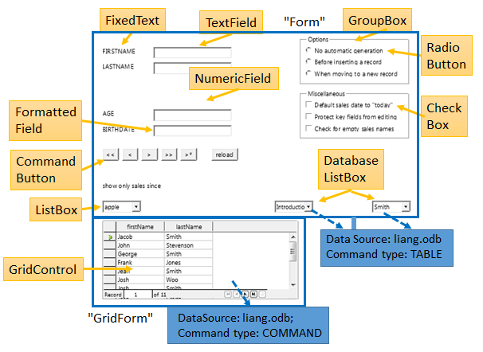
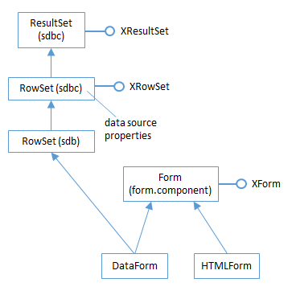
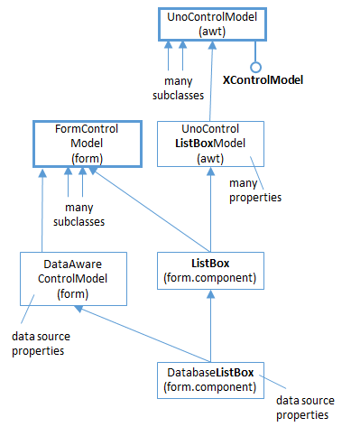
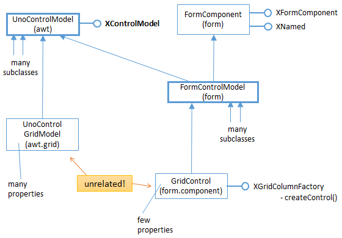
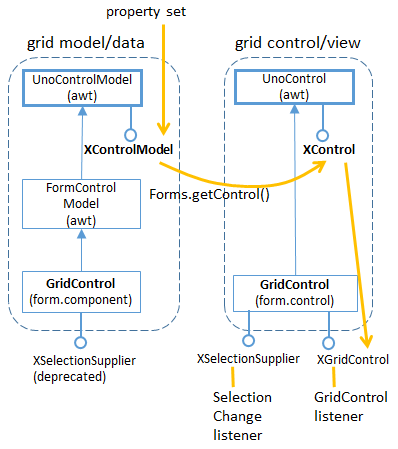

Chapter 40. Building a Form Programmatically¶
Topics
Creating Controls; Assigning a Data Source to a Form; Creating Data-aware Controls; Attaching Listeners
Example folders: "Forms Tests" and "Utils"
BuildForm.java creates a text-based form at run-time, and attaches listeners to the controls. Three of the controls (two list boxes and a grid control) are "data aware" which means that they obtain their data externally from a database. Figure 1 shows a screenshot of the generated document, with the controls and data sources labeled.

Figure 1. The BuildForm.java Generated Document.
The document contains two forms: the default "Form", and "GridForm" holding a single GridControl. "GridForm" employs the same database as "Form", but interacts with it in a different way.
Table 1 summarizes which listeners are used with which controls. These are Office listeners (i.e. subclasses of XEventListener) not Java classes.
| Form Control | Listeners |
|---|---|
| CommandButton | XActionListener, XMouseListener |
| Textfield | XTextListener, XFocusListener |
| RadioButton, CheckBox | XPropertyChangeListener |
| ListBox | XItemListener |
| GridControl | XSelectionChangeListener, |
| XGridColumnListener |
Table 1. Controls and Associated Listeners Used by BuildForm.java.
The finished form is saved in "build.odt", which retains the data links (since they're stored as properties of the form controls), but the listeners are discarded.
The main() function of BuildForm.java creates a text document, and adds form controls by calling createForm():
// globals
private static final String DB_FNM = "liang.odb"; // database
private XTextDocument doc; // for use by the listeners
// in BuildForm.java
public BuildForm()
{
XComponentLoader loader = Lo.loadOffice();
doc = Write.createDoc(loader);
if (doc == null) {
System.out.println("Writer doc creation failed");
Lo.closeOffice();
System.exit(1);
}
doc.addEventListener(this);
// for showing disposing of document (and controls)
GUI.setVisible(doc, true);
XTextViewCursor tvc = Write.getViewCursor(doc);
Write.append(tvc, "Building a Form\n");
Write.endParagraph(tvc);
createForm(doc);
Lo.dispatchCmd("SwitchControlDesignMode");
// switch from form design/editing mode to live mode
Lo.waitEnter();
Lo.saveDoc(doc, "build.odt");
Lo.closeDoc(doc);
Lo.closeOffice();
} // end of BuildForm()
1. Creating Controls¶
createForm() makes many calls to Forms.addControl(), and other Forms.addXXX() methods which indirectly use Forms.addControl(). For example, the call that creates the "No automatic generation" radio button at the top of the form is:
// part of createForm() in BuildForm.java...
XPropertySet props =
Forms.addControl(doc, "Option", "No automatic generation",
"RadioButton", 106, 11, 50, 6);
It returns the model's properties since additional values often need to be set after the control has been created.
Forms.addControl() starts by creating the control's view, utilizing a subclass of the Shape service, called ControlShape. The relevant part of the service hierarchy is shown in Figure 2.

Figure 2. The Shape and ControlShape Services.
Properties in the Shape service define the position, width, and height of the control inside the form. In the call to Forms.addControl() above, the first pair of numbers, (106,11), is the intended position, while its width and height are 50 x 6.
After the view has been initialized, the control's model is created by using the string passed in the method call (e.g. "RadioButton" in this example).
The model and shape are linked together using XControlShape.setControl().
Forms.addControl() is:
// in the Forms class
public static XPropertySet addControl(XComponent doc,
String name, String label, String compKind, int x, int y,
int width, int height)
// use the default form, "Form", for the control
{ return addControl(doc, name, label, compKind,
x, y, width, height, null); }
public static XPropertySet addControl(XComponent doc,
String name, String label, String compKind, int x, int y,
int width, int height, XNameContainer parentForm)
{
XPropertySet modelProps = null;
try {
// create a shape to represent the control's view
XControlShape cShape =
Lo.createInstanceMSF(XControlShape.class,
"com.sun.star.drawing.ControlShape");
// position and size of the shape
cShape.setSize(new Size(width*100, height * 100));
cShape.setPosition(new Point(x * 100, y * 100));
// adjust the anchor so that the control is tied to the page
XPropertySet shapeProps = Lo.qi(XPropertySet.class, cShape);
TextContentAnchorType eAnchorType =
TextContentAnchorType.AT_PARAGRAPH;
shapeProps.setPropertyValue("AnchorType", eAnchorType);
// create the control's model
XControlModel cModel =
Lo.createInstanceMSF(XControlModel.class,
"com.sun.star.form.component." + compKind);
// insert the model into the form (or default to "Form")
if (parentForm != null)
parentForm.insertByName(name, cModel);
// link model to the shape
cShape.setControl(cModel);
// add shape to shapes collection of the doc's draw page
XDrawPage drawPage = getDrawPage(doc);
XShapes formShape s= Lo.qi(XShapes.class, drawPage );
formShapes.add(cShape);
// set Name and Label properties for the model
modelProps = Lo.qi(XPropertySet.class, cModel);
modelProps.setPropertyValue("Name", name);
if (label != null)
modelProps.setPropertyValue("Label", label);
}
catch (Exception e) {
System.out.println(e);
}
return modelProps;
} // end of addControl()
The control is added to the form in two ways: firstly the control model is placed in the parent form with:
parentForm.insertByName(name, cModel);
then the control shape is inserted into the form's draw page:
XDrawPage drawPage = getDrawPage(doc);
XShapes formShape s= Lo.qi(XShapes.class, drawPage );
formShapes.add(cShape);
The Forms class contains several methods that call addControl() with fixed arguments, and set various model properties. For example, Forms.addButton() makes a CommandButton:
// in the Forms class
public static XPropertySet addButton(XComponent doc,
String name, String label, int x, int y, int width, int height)
{
XPropertySet buttonProps = null;
try {
buttonProps = addControl(doc, name, label, "CommandButton",
x, y, width, height);
buttonProps.setPropertyValue("HelpText", name);
// don't want button to be accessible by the "tab" key
buttonProps.setPropertyValue("Tabstop", false);
// the button should not steal focus when clicked
buttonProps.setPropertyValue("FocusOnClick", false);
}
catch (Exception e) {
System.out.println(e);
}
return buttonProps;
} // end of addButton()
The "CommandButton" string passed to addControl() means that the model will be an instance of "com.sun.star.form.component.CommandButton".
Another variant of addControl() is Forms.addLabelledControl() which calls addControl() twice to attach a text label to the control. For instance, the "FIRSTNAME" text field is created with:
// part of createForm() in BuildForm.java...
XPropertySet props =
Forms.addLabelledControl(doc, "FIRSTNAME", "TextField", 11);
The Forms.addLabelledControl() code:
// in the Forms class
public static XPropertySet addLabelledControl(XComponent doc,
String label, String compKind, int y)
{ return addLabelledControl(doc, label, compKind, 2, y, 6); }
public static XPropertySet addLabelledControl(XComponent doc,
String label, String compKind, int x, int y, int height)
{
XPropertySet ctrlProps = null;
try {
// create label (fixed text) control
String name = label + "_Label";
XPropertySet labelProps =
addControl(doc, name, label, "FixedText", x, y, 25, 6);
// create data field control
ctrlProps = addControl(doc, label, null, compKind,
x + 26, y, 40, height); // to the right
ctrlProps.setPropertyValue("DataField", label);
// add label props to the control
ctrlProps.setPropertyValue("LabelControl", labelProps);
}
catch (Exception e) {
System.out.println(e);
}
return ctrlProps;
} // end of addLabelledControl()
The label is of type com.sun.star.form.component.FixedText, and linked to the text field by setting its "DataField" and "LabelControl" properties.
2. Assigning a Data Source to a Form¶
The "Form" and "GridForm" forms are both 'data aware', which means they're connected to external databases. Data awareness is supported by the DataForm subclass of the Form service, which is also connected to the RowSet and ResultSet services of Base, as in Figure 3.

Figure 3. Part of the DataForm Service Hierarchy.
RowSet in the sdbc module supports the "DataSourceName", "Command", and "CommandType" properties (amongst others). "DataSourceName" is set to the database's URL, and "Command", and "CommandType" specify how the database will be queried by the form's controls.
The "Form" form is attached to the "liang.odb" database by:
// part of createForm() in BuildForm.java...
XForm defForm = Forms.getForm(doc, "Form");
Forms.bindFormToTable(defForm,
FileIO.fnmToURL("liang.odb"), "Course");
The code for Forms.bindFormToTable():
// in the Forms class
public static void bindFormToTable(XForm xForm,
String sourceName, String tableName)
{ Props.setProperty(xForm, "DataSourceName", sourceName);
Props.setProperty(xForm, "Command", tableName); // any table name
Props.setProperty(xForm, "CommandType", CommandType.TABLE);
} // end of bindFormToTable()
CommandType.TABLE permits SQL SELECT queries to be sent to the data source by the controls. The "Command" setting can be the name of any table in the database since the form's two list boxes (see Figure 1) send their own SELECT queries (see below).
"GridForm" is set up by a call to Forms.bindFormToSQL() which sends a SQL query to the database to obtain a result set for filling the GridControl table. The code fragment in BuildForm.java is:
// part of createForm() in BuildForm.java...
XNameContainer gridCon = Forms.insertForm("GridForm", doc);
XForm gridForm = Lo.qi(XForm.class, gridCon);
Forms.bindFormToSQL(gridForm, FileIO.fnmToURL(DB_FNM),
"SELECT \"firstName\", \"lastName\" FROM \"Student\"");
The code for Forms.bindFormToSQL():
// in the Forms class
public static void bindFormToSQL(XForm xForm,
String sourceName, String cmd)
{ Props.setProperty(xForm, "DataSourceName", sourceName);
Props.setProperty(xForm, "Command", cmd); // SQL statement
Props.setProperty(xForm, "CommandType", CommandType.COMMAND);
} // end of bindFormToSQL()
It's not clear to me why the command type must be CommandType.COMMAND in Forms.bindFormToSQL() since the SELECT query should be processable by CommandType.TABLE, but using that type cause a run-time error.
3. Creating Data-aware Controls¶
Some control models have subclasses that support data-awareness, which means they can access the form's data source using SELECT queries. The different types are shown in Table 2.
| Control Models | Type of Access |
|---|---|
| GridControl | Fill a table (grid) with data |
| DatabaseListBox, | Fill a list with data |
| DatabaseComboBox | |
| DatabaseTextField, | Fill a text field |
| DatabaseDateField, | |
| DatabaseTimeField, | |
| DatabaseNumericField, | |
| DatabasePatternField, | |
| DatabaseFormattedField, | |
| DatabaseCurrencyField | |
| DatabaseRadioButton, | Specify whether a box is selected |
| DatabaseCheckBox | or not. |
| DatabaseImageControl | Read an image |
Table 2. Data-aware Control Models.
The service hierarchy for these control models is similar to the hierarchy for DatabaseListBox shown in Figure 4 (except for GridControl which I'll get to shortly).

Figure 4. Part of the Service Hierarchy for DatabaseListBox.
Figure 4 should be compared with the service hierarchy for an non-data-aware model, such as CommandButton in Figure 8 of Chapter 39.
The model is initialized by setting properties using the database associated with the parent form. Exactly which properties should be set depends on the model, but DatabaseListBox and DatabaseComboBox are fairly straightforward. "ListSourceType" is set to ListSourceType.SQL, and "ListSource" assigned a string array containing a SQL command. The command should be a SELECT query which returns a single column result set.
The two DatabaseListBoxs in BuildForm.java (see Figure 1) are initialized by calling Forms.addDatabaseList() like so:
// part of createForm() in BuildForm.java...
Forms.addDatabaseList(doc, "CourseNames",
"SELECT \"title\" FROM \"Course\"", 90, 90, 20, 6);
Forms.addDatabaseList(doc, "StudNames",
"SELECT \"lastName\" FROM \"Student\"", 140, 90, 20, 6);
Forms.addDatabaseList() is:
// in the Forms class
public static XPropertySet addDatabaseList(XComponent doc,
String name, String sqlCmd,
int x, int y, int width, int height)
{
XPropertySet listProps = null;
try {
listProps = addControl(doc, name, null, "DatabaseListBox",
x, y, width, height);
// listProps.setPropertyValue("DefaultSelection",
// new short[]{0}); // hangs
listProps.setPropertyValue("Dropdown", true);
listProps.setPropertyValue("MultiSelection", false);
listProps.setPropertyValue("BoundColumn", (short) 0);
// data-aware properties
listProps.setPropertyValue("ListSourceType",
ListSourceType.SQL);
listProps.setPropertyValue("ListSource",
new String[] { sqlCmd });
}
catch (Exception e) {
System.out.println(e);
}
return listProps;
} // end of addDatabaseList()
The DatabaseListBox control is created by calling Forms.addControl(), and then the model's properties are configured.
Setting the list's default selection to be its first value causes Office to hang, so I've commented out that line in addDatabaseList() above. This means that the list boxes appear to be empty until the user clicks on them.
4. Initializing the GridControl¶
The GridControl is created by calling Forms.addControl() with "GridControl" as the model string. Also, since this is the only control not inside the "Form" default form, it's necessary to include a reference to the nameContainer for "GridForm":
// part of createForm() in BuildForm.java...
// add "GridForm" to document
XNameContainer gridCon = Forms.insertForm("GridForm", doc);
XForm gridForm = Lo.qi(XForm.class, gridCon);
// "GridForm" uses an SQL query as its data source
Forms.bindFormToSQL(gridForm, FileIO.fnmToURL(DB_FNM),
"SELECT \"firstName\", \"lastName\" FROM \"Student\"");
// create grid control inside "GridForm"
props = Forms.addControl(doc, "SalesTable", null,
"GridControl", 2, 100, 100, 40, gridCon);
"GridForm"s query generates a result set with two columns consisting of first and last names from the Student table. For this information to be displayed by the grid, two of the grid's columns must be attached to the two result set columns. This is done by calling Forms.createGridColumn() twice:
// part of createForm() in BuildForm.java...
// get grid control's model
XControlModel gridModel = Lo.qi(XControlModel.class, props);
// connect grid control's columns to result set
Forms.createGridColumn(gridModel, "firstName", "TextField", 25);
Forms.createGridColumn(gridModel, "lastName", "TextField", 25);
The main service for a grid control model is GridControl in the form.components module. Part of its hierarchy is shown in Figure 5.

Figure 5. Part of the GridControl Service Hierarchy.
If Figure 5's hierarchy is compared to those for other models, such as CommandButton in Figure 8 of Chapter 39, there are some differences. GridControl inherits the UnoControlModel service, but not through UnoControlGridModel in the awt module. A search for such a service returns an entire awt.grid sub-module for grid services, interfaces, and classes, but these aren't utilized by the form's grid control.
The consequence is that GridControl is initialized in a different way from other models, and listener code becomes a little harder to implement (as we'll see in section 6).
Forms.createGridColumn() employs the XGridColumnFactory interface to link a grid column to a result set column:
// in the Forms class
public static void createGridColumn(XControlModel gridModel,
String dataField, String colKind, int width)
{
try {
// column container and factory
XIndexContainer colContainer =
Lo.qi(XIndexContainer.class, gridModel);
XGridColumnFactory colFactory =
Lo.qi(XGridColumnFactory.class, gridModel);
// create the column
XPropertySet colProps = colFactory.createColumn(colKind);
colProps.setPropertyValue("DataField", dataField);
// connect column to this result set column
colProps.setPropertyValue("Label", dataField);
colProps.setPropertyValue("Name", dataField);
if (width > 0)
colProps.setPropertyValue("Width", new Integer(width * 10));
// add properties column to container
colContainer.insertByIndex(colContainer.getCount(), colProps);
}
catch (Exception e) {
System.out.println(e);
}
} // end of createGridColumn()
5. Attaching Listeners¶
Table 1 shows that nine Office listeners are used with the controls. To reduce coding, BuildForm implements their methods:
// in BuildForm.java
public class BuildForm implements XEventListener,
XActionListener, XPropertyChangeListener,
XTextListener, XFocusListener, XItemListener,
XMouseListener, XSelectionChangeListener,
XGridColumnListener
{
: // methods for creating the controls ...
: // methods for attaching listeners to the controls ...
// listener methods for ...
// XEventListener
public void disposing(EventObject ev)
{ String implName = Info.getImplementationName(ev.Source);
System.out.println("Disposing: " + implName);
}
// XActionListener
public void actionPerformed(ActionEvent ev)
// called when a button has been pressed
{ System.out.println("Pressed \"" + ev.ActionCommand + "\""); }
: // many more listener methods
} // end of BuildForm class
The listener methods are fairly simple, except for the XSelectionChangeListener attached to the grid control. A button control is attached to a listener like so:
// part of createForm() in BuildForm.java...
XPropertySet props = Forms.addButton(doc, "first", "<<", 2, 63, 8);
listenToButton(props);
The code in listenToButton() is depicted by Figure 6. All the other "listener attacher" functions in BuildForm.java work in a similar way.

Figure 6. Attaching a Listener to a Button Control.
The property set passed to listenToButton() is cast to XControlModel, and then converted into a view using Forms.getControl(). The control is cast to an interface (such as XButton or XTextComponent) which offers an addXXXListener() method.
The listenToButton() method is:
// in BuildForm.java
public void listenToButton(XPropertySet props)
{
XControlModel cModel = Lo.qi(XControlModel.class, props);
XControl control = Forms.getControl(doc, cModel);
XButton xButton = Lo.qi(XButton.class, control);
xButton.setActionCommand(Forms.getName(cModel));
xButton.addActionListener(this); // use BuildForms as the listener
} // end of listenToButton()
6. Listening for Grid Control Selection Changes¶
Grid selection changes occur when the user clicks on a cell in the table, as in Figure 7.

Figure 7. Grid Control Selection Change.
Figure 8 shows the grid model and control hierarchy.

Figure 8. Attaching a Listener to a Grid Control.
The grid model inherits UnoControlModel via FormControlModel. On the control side, GridControl in the form.control module inherits UnoControl directly.
GridControl supports two listener interfaces – XSelectionSupplier and XGridControl.
Their attachment is handled by listenToGrid(), which is called after the control has been initialized by createForm():
// in createForm() in BuildForm.java...
props = Forms.addControl(doc, "SalesTable", null,
"GridControl", 2, 100, 100, 40, gridCon);
XControlModel gridModel = Lo.qi(XControlModel.class, props);
Forms.createGridColumn(gridModel, "firstName", "TextField", 25);
Forms.createGridColumn(gridModel, "lastName", "TextField", 25);
listenToGrid(gridModel);
listenToGrid() is defined as:
// in BuildForm.java
public void listenToGrid(XControlModel gridModel)
{
XControl control = Forms.getControl(doc, gridModel);
XGridControl gc = Lo.qi(XGridControl.class, control);
gc.addGridControlListener(this);
XSelectionSupplier gridSelection =
Lo.qi(XSelectionSupplier.class, gc);
gridSelection.addSelectionChangeListener(this);
} // end of listenToGrid()
There's no point using XGridControlListener in this example because its columnChanged() method is only triggered when the data in a column changes, which never occurs. However, XSelectionChangeListener.selectionChanged() is sent an event whenever the user's selection changes, which is what we're interested in reporting.
7. Using the Result Set¶
The XGridControl interface for GridControl doesn't offer all the methods I need for announcing selection changes.
XGridControl inherits XGrid and XGridFieldDataSupplier. XGrid can retrieve the currently selected column, while XGridFieldDataSupplier provides access to the data, but neither of them offer a way to find the currently selected row. That requires the result set for the table, which can only be examined by starting from the form level.
Getting to the result set requires a number of casts, the first being from the event object arriving at the listener to the model that sent it. Forms.getEventControlModel() does that job:
// in the Forms class
public static XControlModel getEventControlModel(EventObject ev)
{ XControl xControl = Lo.qi(XControl.class, ev.Source);
return xControl.getModel();
}
Another conversion step is from control model to the parent form, which is carried out by Forms.getFormName():
// in the Forms class
public static String getFormName(XControlModel cModel)
{ XChild xChild = Lo.qi(XChild.class, cModel);
XNamed xNamed = Lo.qi(XNamed.class, xChild.getParent());
return xNamed.getName();
}
selectionChanged() utilizes getEventControlModel() and getFormName() to convert an event object to a form. Finally, XForm is cast to a result set using the hierarchy in
Figure 3.
// in BuildForm.java
public void selectionChanged(EventObject ev)
{
XControlModel cModel = Forms.getEventControlModel(ev);
XGridControl gc = Lo.qi(XGridControl.class, ev.Source);
System.out.println("Grid " + Forms.getName(cModel) +
" column: " + gc.getCurrentColumnPosition());
String formName = Forms.getFormName(cModel);
XForm gForm = Forms.getForm(doc, formName);
XResultSet rs = Lo.qi(XResultSet.class, gForm);
try {
System.out.println(" row: " + rs.getRow());
}
catch (com.sun.star.uno.Exception e) {
System.out.println(e);
}
} // end of selectionChanged()
selectionChanged() jumps through these hoops in order to print the currently selected column and row in the table. The selected column is obtained by calling XGridControl.getCurrentColumnPosition(), and the current row comes from XResultSet.getRow().
8. Some Bugs¶
My first version of BuildForm.java had a few problems which caused it to hang.
The most serious occurred when I tried to include an image button in the form. The relevant lines in createForm() in BuildForm.java were:
// in createForm() in BuildForm.java...
props = Forms.addControl(doc, "Smiley", null,
"ImageButton", 90, 80, 10, 10);
props.setPropertyValue("ImageURL", FileIO.fnmToURL("smiley.png"));
The button would sometimes appear at the correct position, but cause Office to hang when pressed, and sometimes the button wouldn't appear at all. After failing to find an answer online, I commented out the above lines. If anyone knows of a solution please contact me.
A more minor issue is the initial lack of text in the DatabaseListBoxs. In the original Forms.addDatabaseList(), the list text was set with:
listProps.setPropertyValue("DefaultSelection", new short[]{0});
This line caused Office to hang, and once again I 'solved' the problem by commenting out the code. The unfortunate side-effect is that now the list box's text is blank until the user clicks on the list.